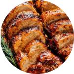
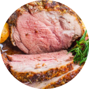

首頁/ 食
 Food that relates to your memories
陸 FOOD
Oh it’s so tasty
Meals
Chicken
Pork
Beef
Lamp
Vegetable
The restaurant that celebrates the best of local produce.
海 FOOD
Oh it’s so tasty
Meals
Oyster
Shrimp
Lobster
Fish
Sashimi
Restaraunt in Island
BBQ日月燒匠
営業時間: 07:00-21:00
提供各式當季特色食材、嚴選横須賀の老舗肉品、明島珍味烤春雞、各式海鮮，多樣美味的食材，與親朋好友享受野炊的美食體驗。
(158則評論)
More Comments Book NowBruch buffet
営業時間: 07:00-14:00
提供各式當季特色食材、高級別的肉品與最新鮮的海鮮、各式酒水飲品，多樣美味的菜餚享受更完美的旅程體驗。
(158則評論)
More Comments Book NowBuger Shop
営業時間: 12:00-20:00
最道地的美式漢堡店，每天現烤的堡包，再用奶油煎過外酥內軟，搭配新鮮番茄蔬菜，現點現煎，保持肉品鮮嫩多汁。
(158則評論)
More Comments Book NowChillLand Bar
営業時間:21:00-04:00
明島日月吧獲得網友票選2022年世界前50名最佳酒吧，在這你一定可以找到喜愛的調酒飲品，也提供各式餐點滿足味雷，快來chill一下吧！
(158則評論)
More Comments Book Now日島美食地圖 | Sunoom Map
Buger Shop
営業時間: 12:00-20:00
最道地的美式漢堡店，每天現烤的堡包，再用奶油煎過外酥內軟，搭配新鮮番茄蔬菜，現點現煎，保持肉品鮮嫩多汁。